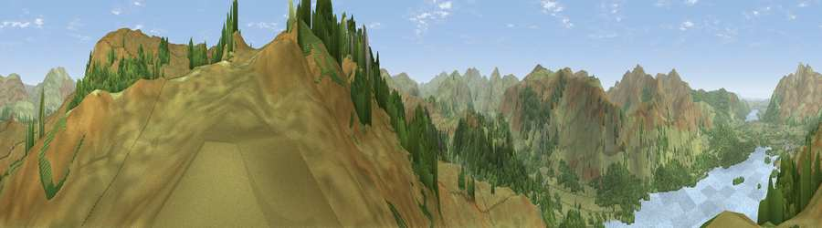

Viewpoint near Grange
#7767 in England · top 46% of its area beats it · near GrangeWhere it is
The exact computed spot (NY 27662 18975). Click the marker for map links.
The view, rendered

A 360° render of this exact spot computed from the terrain model, tree cover and land cover — summer colours, afternoon light, calibrated against photographs of famous viewpoints. Real trees, hedges and buildings will differ in detail.
The panorama
Grey silhouette: terrain skyline in each direction (720 bearings, Earth curvature and refraction included). Dashed green: skyline with trees (+15 m) and buildings (+8 m) as obstacles. Blue strip: how far the ground is visible on each bearing.
Where the view opens
Wedge length = distance to the farthest visible ground on that bearing (vegetation-aware). Rings at 10, 25 and 50 km.
What fills the view
57% grassland · 25% woodland · 17% water
Angular shares of the visible panorama (visual magnitude), not map area. Landscape diversity 0.43 (0–1 Shannon).
Key numbers
More beautiful places nearby
The staircase of upgrades: each row has a higher view potential than everything closer. Driving times are estimates from straight-line distance, calibrated against real road routing — check an actual route before setting out.
| Place | Direction | Drive | Score |
|---|---|---|---|
| Bleaberry Fell | NE · 1 km | ~3 min | 71.1 |
| Viewpoint near Legburthwaite | SE · 1 km | ~4 min | 71.6 |
| Causey Pike | WNW · 6 km | ~13 min | 77.2 |
| Viewpoint near Legburthwaite | ESE · 6 km | ~13 min | 84.5 |
| Viewpoint near Applethwaite | NNW · 9 km | ~18 min | 86.7 |
| Long Side | NNW · 10 km | ~19 min | 89.5 |
| Viewpoint near Finsthwaite | SSE · 32 km | ~50 min | 90.3 |
| The Knoll | S · 432 km | ~407 min | 91.0 |
54.56081, -3.12015 · source: screening · position refined by local search. Computed location — check access rights before visiting.